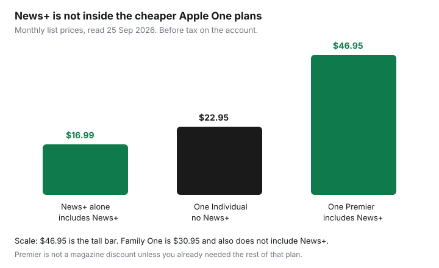

Subscriptions · Canada
Is Apple News+ Worth It in Canada? Magazines, Bundles, and Cancel Steps
Apple News+ in Canada is a magazine rack and a newspaper bundle with a real monthly price, not a free tab inside the News app. Apple’s Canada page, read 25 Sep 2026, says new subscribers get one month free, then $16.99 a month. The same page says News+ is included in Apple One Premier at $46.95 a month, not in the cheaper Apple One plans. The keep test is boring and useful: two or more people in the household open it in a normal week. One person who reads a single paper is often cheaper on that paper, or on the library’s PressReader, once the Globe’s in-library limit is understood.
Cancel steps and the one-paid-news rule sit beside this page on the news subscriptions guide. The library path is the PressReader, Kanopy, and Hoopla guide.
Disclosure: Apple gift cards are an offer type only. Saving Optimizer does not claim an Apple partnership. A gift card can pay a plan you have already decided to keep. It is not a reason to keep News+. Education only. Not a card ranking.
Key takeaways
- Apple’s Canada News page, read 25 Sep 2026: $16.99 a month after one free month for new subscribers. Newspapers it names include the Globe and Mail, the Toronto Star, and the Wall Street Journal, inside a claim of more than 500 publications. Family Sharing covers up to five other people.
- Apple One support, published 16 Sep 2026: Individual is Apple Music, Apple TV, Apple Arcade, and 50 GB iCloud+ at $22.95. Family adds sharing and 200 GB at $30.95. Premier adds News+ and Fitness+ and 2 TB at $46.95. News+ is not “free” inside Individual or Family.
- News+ is only free inside a bundle when you would pay for Premier anyway for the other services. If you bought Premier to get magazines, $46.95 is the news bill.
- Compare one Globe or Star offer, the price in your email, with $16.99 and with PressReader. Do not use a screenshot from Apple’s marketing as the contents list. Open the app.
- Cancel in Settings, your name, Subscriptions, at least 24 hours before a trial ends. Keep it only if two or more household members open it weekly.
What Canadian titles and magazines you actually get vs marketing screenshots
Apple’s own Canada page is the list to trust, and even that page is a sample. It says News+ unlocks premium content from hundreds of magazines and leading newspapers, and the price answer names the Globe and Mail, the Toronto Star, and the Wall Street Journal, plus daily puzzles. The sports blurb names The Athletic, Sports Illustrated, and local newspapers. Magazines can be downloaded cover to cover for offline reading. The free News app, without the plus, still shows editors’ top stories. The plus is the paywall behind specific titles. A screenshot in an ad can feature a magazine your region’s catalogue does not emphasize, or a puzzle you will never open.
The test takes one evening. Subscribe only if you are inside a trial you can still cancel, or use a household that already pays. Open News, follow the papers you would actually read on a Sunday, and try to open the Globe, the Star, and one magazine you can name. If the Globe story you want is still locked, or the magazine is a US edition you will not finish, the marketing screen was doing its job and the subscription is not doing yours. Local news availability depends on the city and on the iOS version Apple lists at the bottom of the page. A small city may see less “local” than the banner implies. Write down what opened. That note is the keep file. A gift card does not change which titles opened.
Apple One bundle math: when News+ is free inside a bundle you already need
Apple’s News page says News+ is included in Premier, $46.95 a month, which bundles five other services. The One support page, published 16 Sep 2026, spells out the three plans. Individual, $22.95 on the One page read the same week: Apple Music, Apple TV, Apple Arcade, and 50 GB of iCloud+. Apple Music on that plan is not shared with the family. TV, Arcade, and iCloud+ can be. Family, $30.95: the same services, 200 GB, shared with up to five other people. Premier, $46.95: those services plus News+ where available, Fitness+ where it is included, and 2 TB, shared with up to five others. Individual and Family do not include News+. If you are on Family because you wanted Apple Music for the house, News+ is still a separate $16.99 if you add it, or you jump to Premier.
“Free inside the bundle” means you already want Premier for the storage, the fitness, the music, the TV, and the games, and News+ rides along. It does not mean the $46.95 is a discount on magazines. A labelled comparison, list price only, before any tax the account adds: News+ alone is $16.99, $203.88 a year. Premier is $46.95, $563.40 a year. The gap is $30 a month for everything Premier adds beyond News+. If you would not pay that gap for 2 TB, Fitness+, and the services you could buy à la carte, you did not get News+ free. You bought a bundle to unlock a newspaper. Apple’s One page says included subscriptions you already pay for are absorbed into One, with a prorated refund except for iCloud+, and that you can cancel One at least a day before the monthly renewal and then pick the individual services you still want. Playlists and TV queues are not wiped by that switch, on Apple’s description. Read the screen. A trial of services you do not already have is one month. Services you already pay for may be excluded from the trial.

| Plan | Monthly list price | News+ included? |
|---|---|---|
| Apple News+ | $16.99 after a one-month trial for new subscribers | This is the product |
| Apple One Individual | $22.95 | No. Music, TV, Arcade, 50 GB. |
| Apple One Family | $30.95 | No. Same services, 200 GB, shared. |
| Apple One Premier | $46.95 | Yes, where News+ is available, plus Fitness+ and 2 TB. |
Compare to a single Globe/Star digital sub and library magazine apps
News+ at $16.99 is a good deal only against the titles you will open. A household that reads the Globe and nothing else should price the Globe’s own digital offer, the one in the renewal email, against $16.99. We are not publishing a Globe sticker price here, because that number moves and the terms we read do not state a current rate. If the Globe’s offer is well under $16.99 and nobody opens a magazine, the single sub wins. If you would also pay the Star, add those two offers. Two publisher bills that exceed $16.99, and that you both actually read, are the case for News+. One publisher bill you read, plus a stack of magazines you do not, is the case against it.
The library sits underneath both. Toronto Public Library’s PressReader help names the Star and, with the in-library wi-fi limit, the Globe. Magazines on PressReader, Flipster, or Libby may already include titles you thought you needed News+ to see. Run the library check in the library guide before the trial converts. Cancelling a Globe or Star plan has its own notice rules, phone for the Globe, 48 business hours for Torstar digital, on the keep-one guide. Do not drop the publisher until News+ has opened the same story at home, not only on Apple’s sample screen.
Family Sharing implications for News+
Apple’s News page says you can share News+ with up to five other family members. The organizer pays the $16.99. Members do not each need a subscription, and they also cannot cancel the organizer’s plan. Apple’s cancel page says if a family member’s Apple Account is on the receipt, that person has to cancel. Set Family Sharing up on purpose. Apple One’s description says sharing does not happen automatically, and that people keep private access: they do not see each other’s activity. News+ does not require five extra bills to cover a household. It does require the organizer to remember the renewal.
A student or a partner who already pays for their own News+, or for Premier, should not keep a second one once they join a family that has it. Apple’s music family help says an individual or student music plan stops renewing when the organizer takes a family music plan. For News+, check Subscriptions after you join and confirm the personal News+ line shows a cancellation or an end date. Two $16.99 charges in one kitchen is the bug. Premier sharing is the same idea at $46.95: one organizer, up to five others, News+ included. A family member who wants out of the content cannot peel News+ off Premier by themselves. The organizer changes the plan.
Cancel in Settings then Subscriptions before renewal
Apple’s cancel article, published 14 Sep 2026, is the path. On an iPhone or iPad: Settings, your name, Subscriptions, the subscription, Cancel Subscription. Scroll if the button is below the fold. If there is no button, or red text says it expires, it is already cancelled. On a Mac: App Store, your name, Subscriptions, Cancel. On Windows, the Apple Music or Apple TV app can reach subscriptions billed by Apple, or use account.apple.com. Android devices that bill through Google Play cancel in Play. A missing subscription usually means a different Apple Account. Search email for “receipt from Apple” and read which account was charged.
Timing: cancel a trial at least 24 hours before it ends. Apple One’s page says you can cancel at least a day before the monthly renewal and keep access through the period you paid. Cancelling News+ does not cancel Apple Music. Cancelling Premier is the bigger decision. Apple says that when you cancel One you can choose the individual services to keep, and you will not lose playlists or TV queues. If you only wanted to drop News+, and you need the 2 TB and the other Premier services, confirm on the screen whether you can move to Family or Individual without News+, or whether you must rebuild those services one by one. Do not cancel Premier the night before a backup you have not thought through. The iCloud storage exception is real: a storage plan larger than the One plan you are leaving may already be billed separately. Read it.
Carrier-billed Apple subscriptions are cancelled with the carrier. A gift card balance does not cancel a renewal. It pays it. If you do not want the renewal, cancel. Then the gift card can sit until you want something else.
Decision rule: keep only if two or more household members open it weekly
Keep News+ if two or more people open it in a normal week, and the library does not already give them the titles they open. One loyal reader of one paper fails the test. They should price that paper and PressReader. Zero readers is a cancel, including when News+ arrived inside Premier and nobody can remember opening it. In that case the decision is not “magazines are nice.” It is whether Premier’s other parts are worth $46.95 without a magazine habit. If they are, you may keep Premier and ignore News+. If they are not, step down and let the $16.99 line disappear with it.
Review on the renewal, not when you feel guilty in January. A shared calendar reminder seven days out matches the audit. Ask the second person, by name, what they opened. A shrug is a cancel. Two specific answers, a Saturday magazine and a weekday column, are a keep until the next renewal. Re-run it. A bundle is allowed to stop being a fit.
Sources & date stamps
- Apple News+ Canada, apple.com/ca/apple-news/, read 25 Sep 2026: $16.99 a month after one free month for new subscribers; more than 500 publications; Globe and Mail, Toronto Star, and Wall Street Journal named; Family Sharing for up to five other people; included in Apple One Premier at $46.95; offline magazine issues.
- Apple One Canada, apple.com/ca/apple-one/, read 25 Sep 2026: Individual $22.95, Family $30.95, Premier $46.95. Apple Support, “How to subscribe to Apple One,” published 16 Sep 2026: Individual and Family contents without News+; Premier includes News+ where available and Fitness+ where included, plus 2 TB; cancel at least a day before renewal; existing included subscriptions are absorbed, with a prorated refund except iCloud+.
- Apple Support, “Cancel a subscription from Apple,” published 14 Sep 2026: Settings, your name, Subscriptions; trial cancelled at least 24 hours before it ends; the account on the receipt is the account that can cancel.
- Yearly figures are monthly list price times 12: News+ $203.88, Premier $563.40. They are not tax-inclusive invoices.
Frequently asked questions
How much is Apple News+ in Canada?
Apple's Canada page, read 25 Sep 2026, says one month free for new subscribers, then $16.99 a month. You can share it with up to five other family members. The organizer pays. Confirm tax on the payment sheet.
Is News+ included in Apple One?
Only in Premier, $46.95 a month, which also includes Fitness+ where available and 2 TB of iCloud+. Individual at $22.95 and Family at $30.95 do not include News+, on Apple's support page published 16 Sep 2026. News+ is not free unless you already needed Premier.
Which Canadian papers are included?
Apple's page names the Globe and Mail, the Toronto Star, and the Wall Street Journal, inside a claim of more than 500 publications, plus puzzles and cover-to-cover magazines. Open the titles you would actually read. A marketing screenshot is not your catalogue.
How do I cancel?
Settings, your name, Subscriptions, then Cancel Subscription. Apple's article was published 14 Sep 2026. Cancel a trial at least 24 hours before it ends. The Apple Account on the receipt is the one that can cancel. Deleting the News app does not stop billing.
When is it worth keeping?
When two or more people in the household open it in a normal week, and the library does not already give them those titles at home. One reader of one paper should price that paper instead. Zero readers is a cancel, even inside Premier.